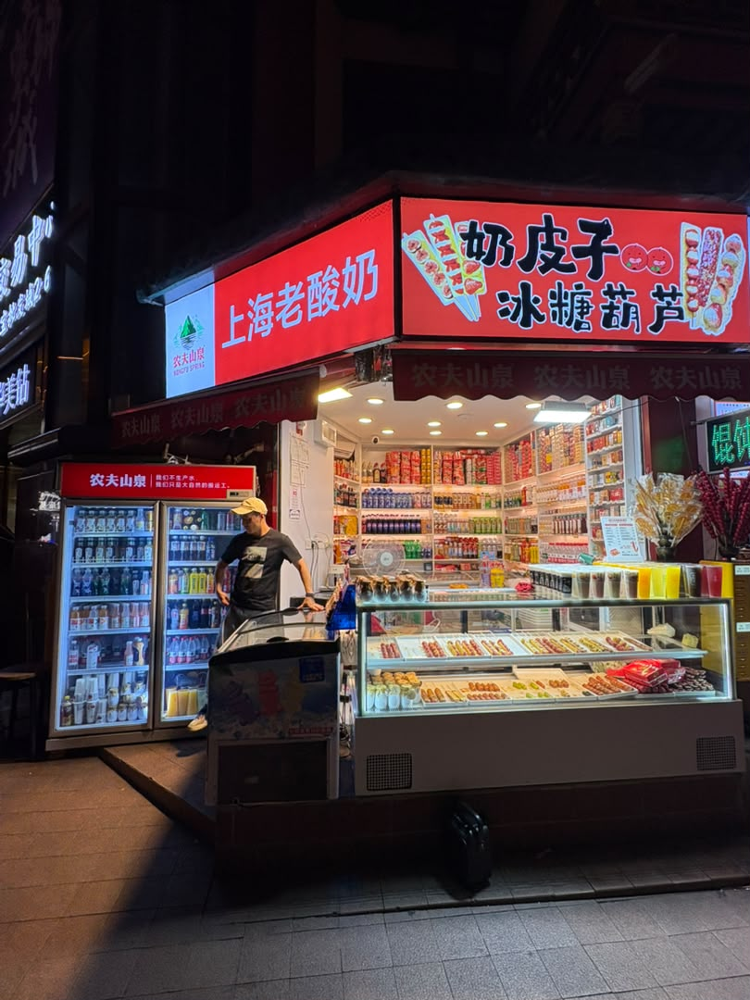
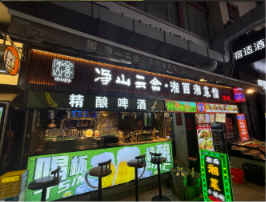
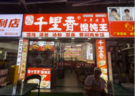
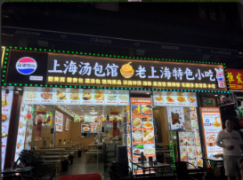
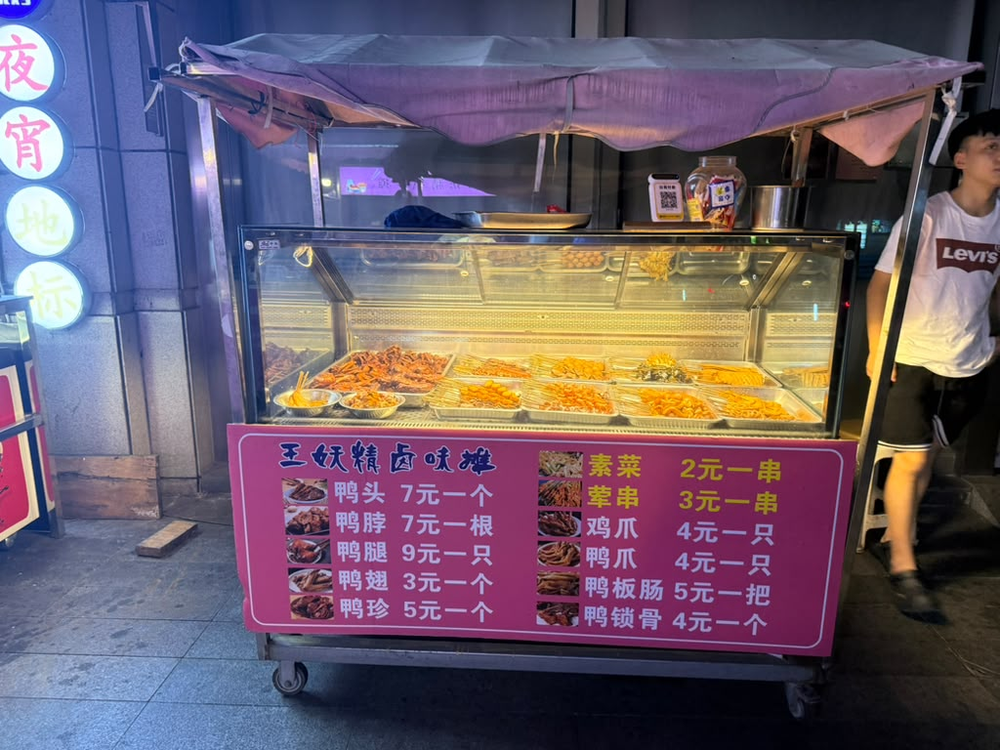

Shanghai Traditional Yoghurt
A local store run by a hard working father. He works from morning to provide for his family selling candies and yoghurt. He sells these sweet product as he says it attracts children to his store, which he enjoys.
12pm - 10pm


净山云舍湘西湘菜馆
A business that is ran by a single women. She cooks several grilled dishes using recipes which her mother passed down to her. In doing so, she hopes to keep her mother's cooking alive.
1am - 9pm


Thousands of miles of fragrance
- Wonton Stews -
The owner of this store grew up with a good nose for food. He said that he always loved the smell of food when he went out with his friends. He channeled that love into his cooking and hopes that people will smell his dishes from thousands of miles away.
7am - 11pm


Shanghai Tangbao Restaurant & Shanhai Special Snacks
This store was originally two neighboring competitors, however they ended up mergining together to create a single business that could specialize in different types of dishes.
7pm - 12am


Wang Goblin Braised Flavour Stall
A local stall that specializes in selling duck and chicken. He started the stall as a way of spreading local Chinese cuisine with the tourists that came to YuYuan.
12pm - 1am